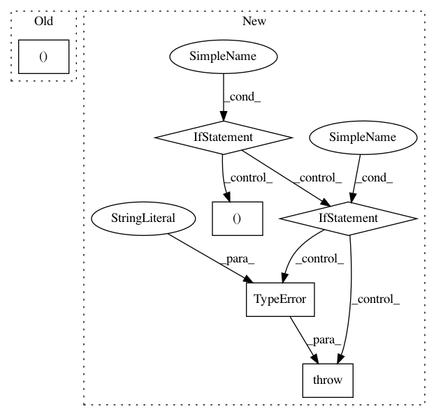

4fb88fdc63292d93ce2fdbbf77a4043f18b2c769,nn_dataflow/PartitionScheme.py,PartitionScheme,part_layer,#PartitionScheme#Any#Any#,98
Before Change
"""
p_layer = Layer(layer.nifm,
Util.idivc(layer.nofm, self.pdims[pe.OUTP].size()),
(Util.idivc(layer.hofm, self.pdims[pe.OFMP].h),
Util.idivc(layer.wofm, self.pdims[pe.OFMP].w)),
layer.sfil,
layer.strd)
After Change
p_hofm = Util.idivc(layer.hofm, self.pdims[pe.OFMP].h)
p_wofm = Util.idivc(layer.wofm, self.pdims[pe.OFMP].w)
if isinstance(layer, ConvLayer):
p_layer = ConvLayer(layer.nifm, p_nofm, (p_hofm, p_wofm),
layer.sfil,
strd=(layer.htrd, layer.wtrd))
elif isinstance(layer, LocalRegionLayer):
p_layer = LocalRegionLayer(p_nofm, (p_hofm, p_wofm),
layer.nreg, (layer.hreg, layer.wreg),
strd=(layer.htrd, layer.wtrd))
else:
raise TypeError("PartitionScheme: unrecognized layer type.")
p_batch_size = batch_size / self.pdims[pe.BATP].size()
p_occ = 1. * layer.total_ops(batch_size) \
/ (p_layer.total_ops(p_batch_size) * self.size())
In pattern: SUPERPATTERN
Frequency: 3
Non-data size: 6
Instances
Project Name: stanford-mast/nn_dataflow
Commit Name: 4fb88fdc63292d93ce2fdbbf77a4043f18b2c769
Time: 2017-05-03
Author: mgao12@stanford.edu
File Name: nn_dataflow/PartitionScheme.py
Class Name: PartitionScheme
Method Name: part_layer
Project Name: arviz-devs/arviz
Commit Name: db7ff57c52538aa7d7d566ac83de51cf5365e8f8
Time: 2018-09-16
Author: ColCarroll@users.noreply.github.com
File Name: arviz/stats/diagnostics.py
Class Name:
Method Name: _get_neff
Project Name: dhlab-epfl/dhSegment
Commit Name: a4217c8986523a59dd9b764467fc21b29dd572ba
Time: 2018-08-31
Author: sofia.oliveiraares@epfl.ch
File Name: train.py
Class Name:
Method Name: run